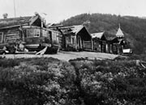
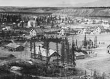
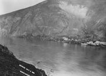
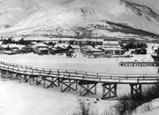
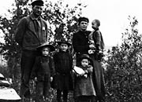
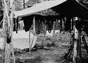
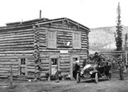

Les nouveaux modes de transport et de communication ont apporté de nombreux changements dans le territoire. Le peuple han a vu son site de pêche se transformer en la ville de Dawson. Whitehorse est passée d’un site de pêche saisonnier à une plaque tournante à la tête de la voie ferrée.
Les bateaux à aubes ont sillonné les cours d’eau durant plus de 50 ans, établissant le lien entre les petites agglomérations le long des cours d’eau et des lacs. De nombreux postes de traite, agglomérations et camps de bûcherons se sont établis le long des parcours des bateaux à aubes et des routes d’hiver.
Le Yukon, jadis la demeure de quelques petits groupes de personnes, comportait maintenant des agglomérations plus grandes et stables, dotées d’écoles, de routes et de services. Jusque dans les années 40, de nombreuses Premières nations vivaient des ressources de la terre, à l’écart des agglomérations.
Par suite du déclin des activités minières, la population de Dawson a diminué radicalement. En 1923, la région de Mayo, grâce à ses mines d’argent, a pris le dessus sur le Klondike comme principale région d’exploitation minière dans le territoire. Certaines agglomérations, à la merci de fortunes minières, sont devenues des villes-champignons pour ensuite se transformer en villes fantômes.
Le domaine des transports a continué son évolution. Avec la disparition des bateaux à aubes, les collectivités ont délaissé les cours d’eau, qui étaient jadis les principales voies de communication du territoire, pour se tourner vers les nouvelles routes terrestres toutes saisons.
Relais routiers
Anciennement, le relais routier était le second foyer pour les voyageurs du Yukon. On pouvait s’y nourrir, s’y loger et y laisser les chevaux à l’abri. Il servait également de halte très appréciée durant l’hiver.
«Au pont de Minto, Dutch Henry, en bon Hollandais, travaillait rapidement et avec générosité, mais il ne tolérait aucune inconduite.»
Aaro Aho
AY, MS 82/161
Passer au tableau Relations interpersonnelles et familialesOù nous habitions
(Ci-dessus) Jack Sam, aîné de la Première nation Selkirk, et son chien (1987). À la fin de la construction de la route du Klondike, les habitants de Fort Selkirk ont déménagé à Pelly Crossing.
AY, collection de la Première nation Selkirk nº 9656.
Moosehide, tout juste en aval de Dawson, est une communauté han (vers 1900).
AY, collection Storm, 94/76 nº 28
On a établi Whitehorse au pied des rapides, en aval du canyon Miles. Les Tutchone du Sud appelaient le canyon Kwanlin (vers 1905).
AY, collection Hamacher, 85-75 nº 25
Le 4 juillet 1901 à Dawson. À son apogée, la population de Dawson frôlait les 40000 habitants.
AY, collection Johns, 82-318 nº 284
À Carcross vivait la Première nation Carcross-Tagish. Durant la première partie du XXe siècle, l’endroit était nommé Caribou Crossing.
AY, collection Preston, 85/78 nº 120
La famille Hendrickson, colons (vers 1915).
AY, collection Swanson nº 8570
Camp de pêche de Joseph Ladue, rivière Pelly (1942). Les Autochones avaient des camps saisonniers où ils habitaient durant la saison de la pêche.
AY, collection Phelps nº 5732
Relais routier Hay Ranch (sans date).
AY, collection Scott/Phelps, 89/31 nº 46